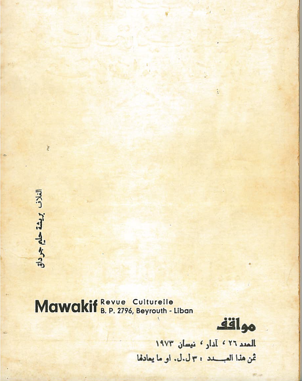

Computing
tags
categories
series
الانسان والثقافة والحضارة، ليف كوغان
مطبوعة / Text

Update: 2020-11-14
Tags:
المجتمع
<< رقمنة الكتب
العالم الإفتراضي >>
See Also
خلية مستقلة
الفضاء الكامن
دائرة كهربائية
script_deployed